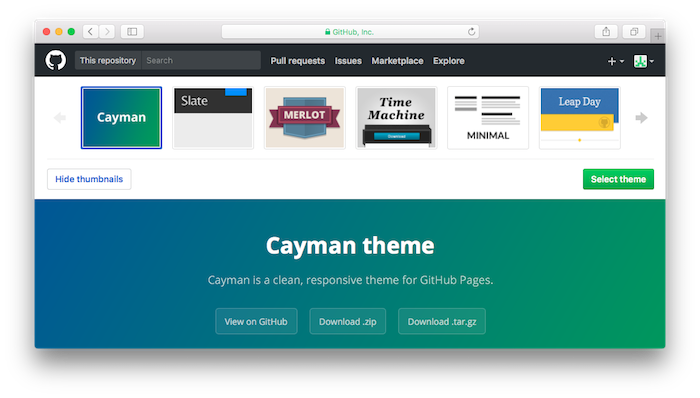
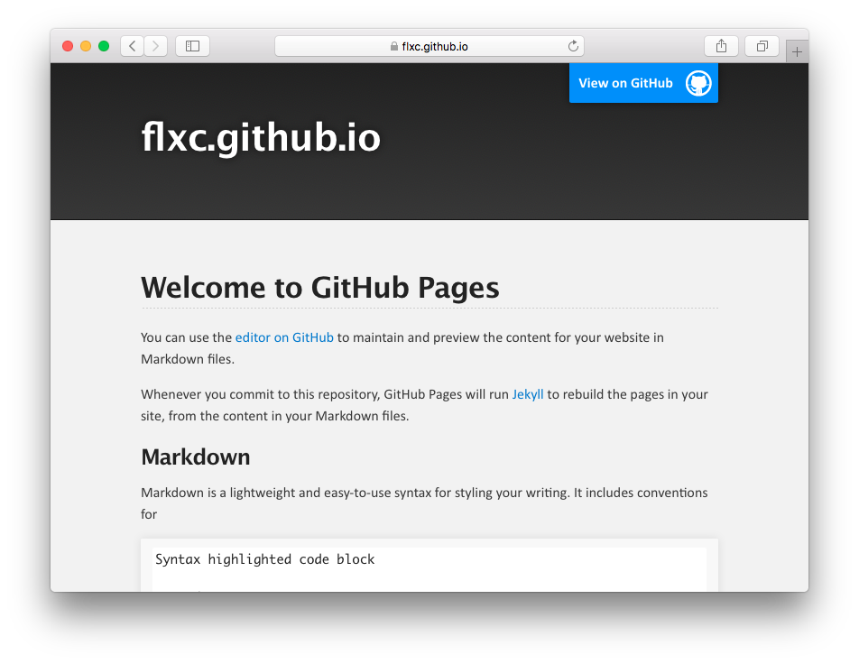
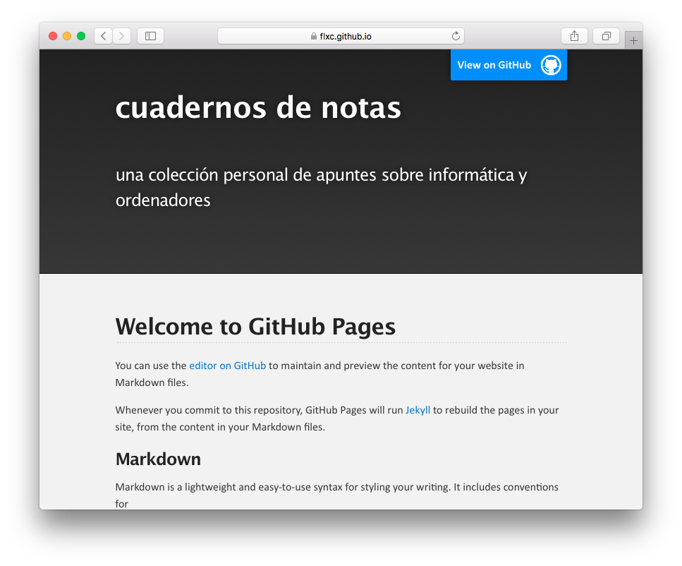
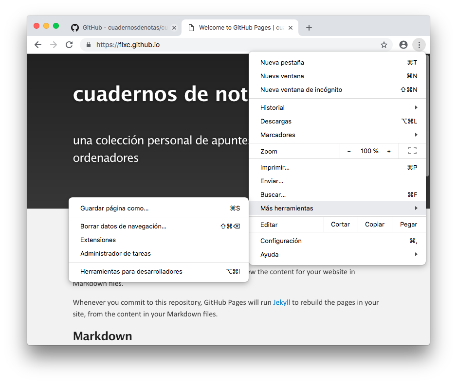
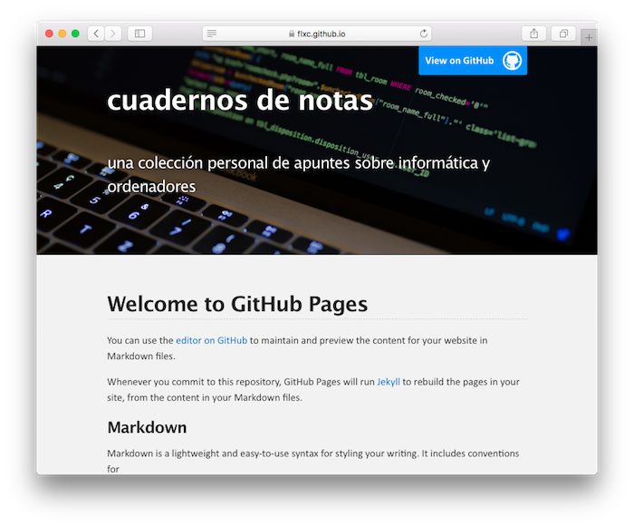
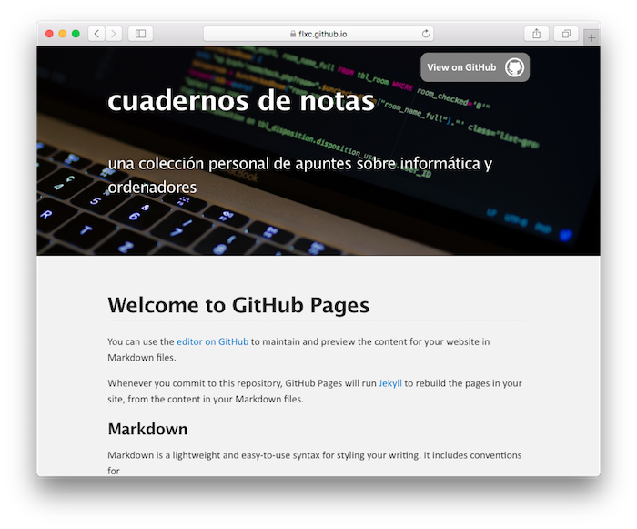

La página de portada
Tras ver como se crea un sitio web en GitHub Pages, es el momento de diseñar nuestra página de portada.
Primeros pasos
La página principal será accesible mediante la URL https://NombreUsuario.github.io. Comenzamos por crear un proyecto vacío con ese nombre. En mi caso, el nombre de usuario será flxc, y el del repositorio, flxc.github.io.
En la página principal del repositorio pulsamos sobre el botón [settings] y en el apartado GitHub Pages, seleccionamos la rama master, pulsando a continuación sobre el botón [Choose a theme].
Aparece la ventana de selección de temas:

Para mi colección de cuadernos, he seleccionado el tema Slate. Pulsamos en el botón [Select theme]. Se generará un texto “de pruebas” que guardaremos como index.md. Pulsamos en el botón Commit changes.
Tras todo esto, introducimos en el navegador la URL nombreusuario.github.io (en el ejemplo, flxc.github.io) y veremos el primer resultado:

Archivo de configuración
Tomamos el archivo _config.yml generado automáticamente:
theme: jekyll-theme-slate
Y modificamos su contenido:
theme: jekyll-theme-slate title: cuadernos de notas description: <br>una colección personal de apuntes sobre informática y ordenadores<br><br> lang: es
Los parámetros title y description son usados por este tema para mostrar esos dos textos en la cabecera de la página. Las etiquetas <br> se insertarán en el html final, y sirven para provocar un salto de línea y aumentar el espaciado. El resultado es el siguiente:

El parámetro lang evita que los buscadores y navegadores la consideren como página en inglés.
Una imagen en la cabecera
He escogido este tema porque me proporciona una sección de cabecera con texto en color blanco y fondo oscuro. Ideal para sustituir ese fondo por una imagen.
Lo primero es hacernos con una fotografía que nos guste. Para encontrar imágenes de libre uso suelo acudir Unsplash o a Pixabay. Para mi página he escogido esta foto.
Lo siguiente es modificar el archivo css de hoja de estilos, cambiando los atributos de la sección de cabecera, y poniendo la foto como imagen de fondo. Lo primero es identificar el elemento cabecera. Vamos a analizar el código html generado.
Abrimos el navegador Chrome e introducimos la URL flxc.github.io. Con nuestra página a la vista, pulsamos sobre el icono de la esquina superior derecha, y en el menú desplegado, seleccionamos Más herramientas > Herramientas para desarrolladores.

Se abre el panel de análisis de Chrome. Seleccionamos la pestaña Elements. A la izquierda tenemos el texto HTML de la página, y a la derecha, las propiedades del elemento seleccionado. Al seleccionar un elemento en el bloque izquierdo, se resalta en la parte superior.

Vemos que la cabecera de nuestra página es un bloque delimitado por las etiquetas <div>...</div>:
<body> <!-- HEADER --> <div id="header_wrap" class="outer"> <header class="inner"> ... contenido de la cabecera </header> </div>
La etiqueta <!- texto -> se utiliza para añadir comentarios en el texto HTML, que serán ignorados por el navegador.
Las etiquetas <div> ... </div> delimitan un bloque. Las etiquetas <header> ... </header> delimitan una cabecera de página. Aquí vemos un bloque <div> que encierra a otro <header>. Este segundo deja unos márgenes a izquierda y derecha, por lo que vamos a aplicar la imagen al bloque externo.
Véase que la etiqueta de apertura del bloque define los atributos id y class. El atributo id hace que podamos hacer referencia a este bloque por su nombre “header_wrap”.
Examinando el repositorio del tema vemos que la hoja de estilos se llama /assets/css/style.scss. Así que lo que tenemos que hacer es crear en nuestro repositorio un archivo con igual nombre y en la misma carpeta.
El contenido será:
--- --- @import "{{ site.theme }}"; #header_wrap { background: url(portada.jpg) no-repeat center center; background-size: cover; }
Nótese que el archivo lleva extensión .scss en lugar de la habitual .css que utilizamos con las hojas de estilo. Se trata de una versión mejorada que incorpora cosas tales como la etiqueta @import o el front-matter. La inclusión de este último es obligatoria para Jekyll, aunque lo escribamos vacío, y su ausencia hará que la hoja de estilos no tenga efecto.
La instrucción @import sirve para incorporar las reglas css definidas por el tema original, y que estas no se pierdan.
Recuérdese que cuando, en un archivo css hacemos referencia a un elemento por su nombre, el “id” debe ir precedido del carácter #.
La propiedad background tiene cuatro valores asignados:
-
el nombre del fichero con la fotografía. Como no tenemos seguridad de la URL completa, le pedimos al navegador que la deduzca usando la función url(). No escribimos ningún nombre de carpeta, por lo que se asume que tenemos que poner la foto en la misma carpeta que el archivo css.
-
el argumento no-repeat evita un mosaico de fotografías cuando estas son pequeñas.
-
los argumentos center centran la fotografía vertical y horizontalmente.
-
el atributo background-size hace que la fotografía cubra todo el espacio.
Tras crear este archivo /assets/css/style.scss, subimos la fotografía portada.jpg a la misma carpeta assets/css/.
Esperamos a que se genere de nuevo el sitio web, y el resultado es este:

Texto de la página principal
Ya hemos visto que escribir en formato markdown es fácil. En un capítulo posterior repasaremos las reglas de sintaxis. Por ahora nos basta saber que:
-
Los párrafos se separan uno de otro con al menos una línea en blanco.
-
Los párrafos de cabecera llevan uno o varios caracteres
#como prefijo, con un espacio en blanco entre ese prefijo y el texto. El número de caracteres#, de uno a seis, indica el nivel, lo que se traducirá en una etiqueta de<h1>a<h6>. -
Los enlaces se escriben en formato
[texto a mostrar](URL a enlazar)
Para enlazar con una URL externa:
Véase la lista de temas de [GitHub](https://github.com/) en esta [página](https://pages.github.com/themes/).
Para enlazar a otra página de nuestro repositorio:
Pulse [aquí](indice.md) para ver el índice.
-
Las imágenes se muestran insertando:

El texto alternativo es opcional:

-
Una imagen puede servir de enlace al pulsar sobre ella. La ponemos en lugar del texto del enlace:
[](url a enlazar)
Traduciendo texto
Analizando el tema original, convendría traducir del inglés algunos fragmentos de la plantilla _layouts/default.html. Copiamos ese archivo a nuestro proyecto.
Cambiamos el texto del botón en la cabecera: View on GitHub por Ver en GitHub
La etiqueta <footer> delimita el pie de página. Yo lo he dejado así:
<footer class="inner"> <p class="copyright">© El taller de jf. Creado en <a href="https://pages.github.com">GitHub Pages</a></p> <p>Fotografía de cabecera: Caspar Rubin en <a href="https://unsplash.com/@casparrubin">Unsplash</a></p> </footer>
Cambiando el estilo del botón
Vamos a añadir un último toque. Ajustaremos el estilo el botón View on Github de la cabecera.
Analizando el html generado, he descubierto que el botón en cuestión tiene un nombre: id=”forkme_banner”.
Abrimos el archivo /assets/css/style.scss y añadimos:
#forkme_banner { display: block; position: absolute; top: 10px; right: 10px; z-index: 10; padding: 10px 50px 10px 10px; color: white; background: url(../images/blacktocat.png) grey no-repeat 95% 50%; font-weight: 700; box-shadow: 0 0 10px rgba(0,0,0,0.5); border-bottom-left-radius: 10px; border-bottom-right-radius: 10px; border-top-left-radius: 10px; border-top-right-radius: 10px; }
En resumen:
- dejo algunos atributos tal y como estaban
- cambio el color de fondo, de azul a gris
- las últimas cuatro líneas son para añadir bordes redondeados en las cuatro esquinas
- también le he añadido un poco de margen por encima (estaba pegado al borde superior).
Y el resultado es:
